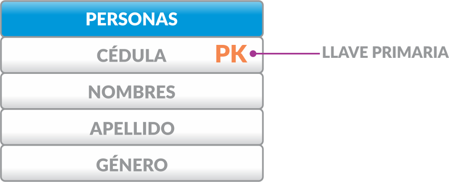
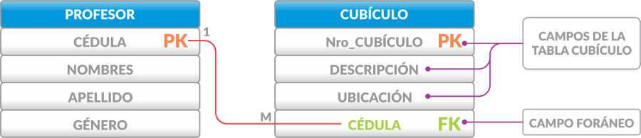
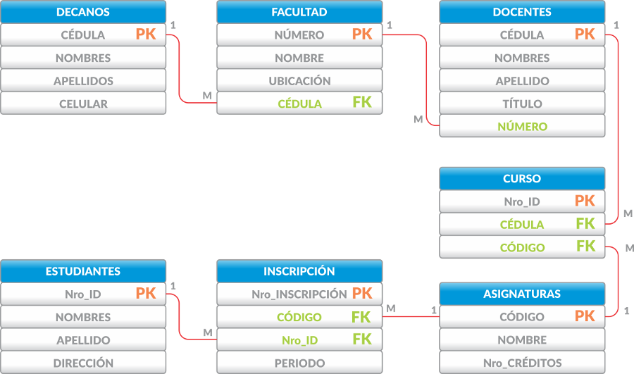

📋 Reglas del Modelo Relacional
¿Qué es el Modelo Relacional?
El Modelo Relacional es el siguiente paso en el modelado de la base de datos. Este representa la base de datos por medio de tablas en las cuales se almacenará la información. El diagrama del modelo relacional se crea a partir del diagrama entidad relación siguiendo una serie de reglas.
Importancia: Comprender estas reglas es esencial para transformar correctamente un modelo conceptual (MER) en un modelo relacional implementable en una base de datos real.
📚 Reglas para pasar del Modelo Entidad-Relación al Relacional
Conversión de Entidades a Tablas
Todas las entidades del modelo entidad relación se convierten en tablas en el modelo relacional, y sus atributos en campos de la tabla. Como ejemplo tomaremos la entidad persona con sus atributos y los representaremos así:
📊 Modelo Relacional - Tablas

Las entidades se convierten en tablas y los atributos en campos (columnas).
Llave Primaria
El atributo principal de cada entidad en el modelo entidad relación lo llamaremos llave primaria en el modelo relacional y por facilidad lo representaremos con las letras PK (Primary Key), las cuales irán a continuación del nombre del campo. Para el caso de personas el atributo principal es la cédula, por lo tanto su representación dentro de la tabla será así:
🔑 Modelo Relacional - Llave Primaria
El atributo principal (cédula) se convierte en la llave primaria (PK) de la tabla.
Relación Uno a Uno (1:1)
Donde exista una relación Uno a Uno (1:1) entre 2 entidades, se debe crear una llave que llamaremos foránea, en una de las 2 tablas asociadas.
Una llave foránea es una referencia a una llave en otra tabla y determina una relación existente entre 2 tablas. Una llave foránea en una tabla se asocia con una llave primaria en la otra tabla. Para agregar una llave foránea simplemente se agrega un campo más con las mismas características que el campo que es llave primaria.
Como ejemplo tomemos las entidades profesor y cubículo.
🔗 Modelo Relacional - Uno a Uno
La llave primaria de profesor (Cédula) se agrega como llave foránea en cubículo.
💡 Nota Importante
Aunque la multiplicidad era originalmente de uno a uno (1:1) en el diagrama entidad relación, veremos que siempre donde coloquemos una llave foránea la relación puede llegar a ser a muchos (M) registros.
Como la relación es de uno a uno (1:1) también hubiéramos podido hacer el siguiente diagrama:
🔄 Alternativa para Relación 1:1
En este caso la llave primaria de la tabla Cubículo (Nro_cubículo) se pasa como llave foránea a la tabla Profesor.
Relación Uno a Muchos (1:M)
Donde exista una relación de uno a muchos (1:M) en el modelo entidad relación, crearemos las tablas correspondientes en el modelo relacional, y donde se encontraba la multiplicidad muchos (M) se creará obligatoriamente la llave foránea de la misma forma como se hizo en el caso anterior.
Tomemos como ejemplo las entidades Persona y Mascota. En este caso asumiremos que una persona puede tener varias mascotas, pero cada mascota pertenece a una sola persona.
📊 Modelo Relacional - Uno a Muchos

La multiplicidad queda uno (1) al lado de la llave primaria y muchos (M) al lado de la llave foránea.
Relación Muchos a Muchos (M:M)
Donde exista una relación de muchos a muchos en el modelo entidad relación, la relación se convierte en una tabla nueva que une las 2 entidades que se estaban relacionando originalmente. La nueva tabla tendrá su propia llave primaria y tendrá 2 llaves foráneas, las cuales corresponden a las llaves primarias de las otras dos tablas. Adicionalmente tendrá los campos adicionales que sean requeridos. El nombre para la nueva tabla puede ser el mismo de la relación u otro que sea más adecuado.
Para la cardinalidad se mantiene la misma regla aplicada en los casos anteriores. Se colocará un 1 donde se encuentran las llaves primarias, y una M donde se encuentra las llaves foráneas, transformándose así en dos relaciones de uno a muchos (1:M).
Tomando como ejemplo las entidades estudiante y libro, y aplicando esta regla, se transformarían en el modelo relacional de la siguiente forma:
🔗 Modelo Relacional - Muchos a Muchos
La nueva tabla "PRÉSTAMOS" une las entidades ESTUDIANTES y LIBROS con sus respectivas llaves foráneas.
📝 Detalles de la Tabla Intermedia
La nueva tabla que fue creada a partir de la relación "prestar", se le puso el nombre préstamo, se le creó una llave primaria llamada "Id_Préstamo", se le agregó las dos llaves foráneas a partir de las llaves primarias de estudiantes (Nro_Id) y libros (Isbn) y se le agregó un nuevo campo llamado "Fecha_préstamo".
🎓 Ejemplo Completo: Sistema Universitario
Ejemplo completo aplicando todas las reglas del modelo relacional al sistema universitario.
🚀 Siguiente Paso
Ahora que conoces las reglas para transformar un modelo MER en un modelo relacional, el siguiente paso es aprender a implementar este diseño en una base de datos real con Del Modelo Conceptual al Modelo Relacional.
Continúa con: Del Modelo Conceptual al Modelo Relacional →